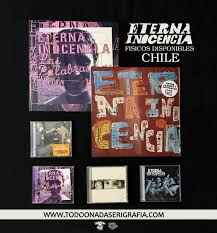

Discografia
Albumes de Estudio
A lo largo de su carrera grabaron Albumes de estudio, Albumes en vivo, Eps, Singles, Splits y compilaciones. Debajo una lista de sus discos de estudio.
- Punkypatin 1995
- Dias Trister 1997
- Recycle 1999
- A Los Que Se Han Apagado 2001
- Las Palabras Y Los Rios 2004
- La Resistencia 2006
- EI 2009
- Entre Llanos Y Antigales 2014
- Verano Permanente 2018
- No Bien Abran Las Flores 2022
